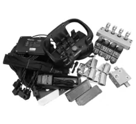

Find by CATEGORY
View All

HYDRAULIC VALVES & MONOBLOCKS
PROPORTIONAL AND ON/OFF CONTROLLERS, JOYSTICKS
RADIO REMOTE WITH PROPORTIONAL VALVE PLUG AND PLAY SET

RADIO REMOTE TO AN EXISTING VALVE

RADIO REMOTE WITH ACTUATOR TO OPERATE MANUAL DISTRIBUTORS

PROPORTIONAL SECTIONAL VALVES
RADIO REMOTE WITH EXTRA JOYSTICKS TO CONTROL FROM CABINE
RADIO REMOTE WITH EXTRA JOYSTICKS & PROPORTIONAL VALVES
SPARE PARTS FOR SCANRECO
MONOBLOCK FOR TRACTOR LOADER
ON-OFF MONOBLOCK VALVES WITH RADIO REMOTE
PROPORTIONAL OR ON-OFF JOYSTICK WITH MONOBLOCK OR SECTIONAL VALVE